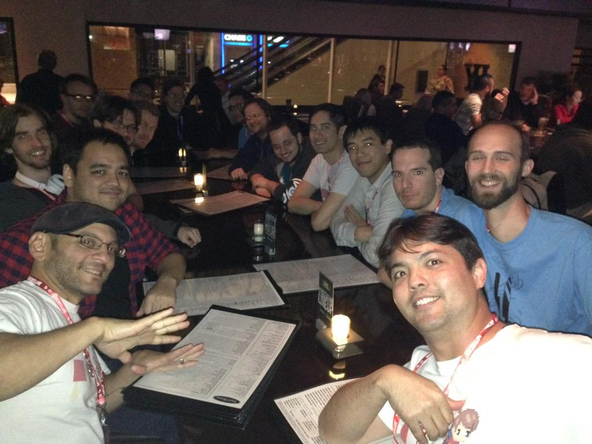
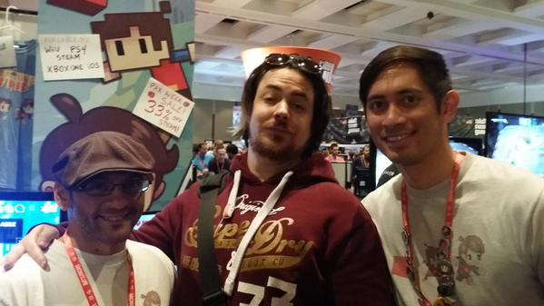
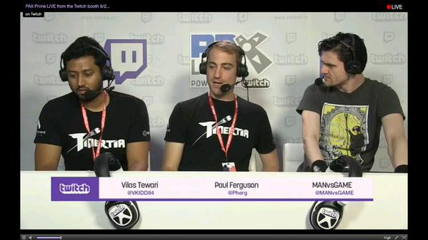
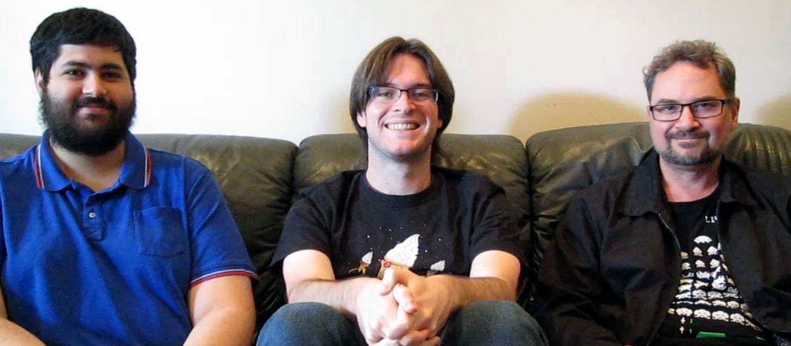

Write something about how the only surfire way to prevent cheating is to run code on a server and not to send info that the player shouldn't be able to see. Practically impossible, but we can make it much harder to accomplish.
One of the easiest ways to cheat in a game is to edit the save file. Armed with a hex editor, a cheater can simply change some values to give themselves more money, more life, whatever can easily be changed in your save file. While we cannot completely prevent tampering with a save file, we can make it harder for the average player to crack.
We will use industry standard encryption to achieve this. This pushes the difficulty to cheat from editing a simple file or registry setting, to searching for the encryption key, the password, that exists somewhere in your binary. This takes more skill and so will make it harder for the average player to cheat.
I just got back from Pax Prime 2015 where I was working in the Adventures of Pip booth. While I don't have a chance to wait a couple of hours in line to try out the newest Oculus Rift or Dark Souls III, I did manage to sneak in some playing time. And above all I met a lot of really cool people! I wanted to record my experience for later reference.
Adventures of Pip, a game I was lead programmer on for Tic Toc Games, made the Pax10, a indie game competition. We shared convention space with the other 9 teams. All of who were really cool.
I'll start with this game, since it's the thing that got me to Pax Prime 2015 in the first place. This is the game I spend two years of my life on. It's the second game I've been a lead programmer on. We hit iOS, Steam, XBox, Wii U, and PS4 with this.
The basic premise is that you start off as a single pixel named Pip. Pip has the power to absorb pixels from certain enemies that evolve him to an 8-bit version and 16-bit version. Each version has it's own abilities, so the player has to change forms to navigate through obstacles in the level.
With me at Pax were Marc Gomez (game developer) and Shereef Morse (Boss Man/CEO).
This was not a part of the Pax10, though I highly recommend this game. Beautiful hardcore platformer by the guys at Candecent Games. By hardcore, I mean you really should have experience beating a sidescrolling Mario platformer or something. I would not play this as an intro to sidescrolling platformers!
The main idea is that there is no jump button, you much rocket jump. This means that you need fine control of the joysticks to launch rockets in the right direction to get your momentum going the right way. You can get going really fast if you build up your momentum right. Anyway, check out the video.
I met Vilas, Ferg, and Jeff from the Tinertia team at last years Pax Prime. They happen to be located in Los Angeles too so we've met up throughout the year. Great guys, I wish them the best! 
You like the Food Network? You also like to go out and slaughter your meat like a ninja? This game is for you. They set the mood and fit in so much character development in the first 2 minutes, that it really bodes well this game will be outstanding throughout when it's finally released! The team showed up working their Pax10 table in classy black aprons and they also had a ton of gold chocolate coins with their logo emblazened on them.
Okay, there's this dude that does both all his own animations and his own code. Like really? Wow! This was probably the best looking game of the Pax10, with bullets and shaders and effects everywhere. Awesome twin stick shooter.
A local player ninja attack your friends, with a heavy stealth element. You could throw a smoke bomb and either teleport to it or stealth in place. The end result was that momentarily you could hide from your opponent but they could do the same back! This was programmed by one dude, Leandro, with art he got from a student. He had a friend Elyse who was also helping work the booth who happens to work for IndieCade. Great twitch mechanics, reminded me of the fun I had playing Bomberman with my friends.
A local PvP twin stick shooter. By Samuel Eng, another one of these guys who made the game by himself and ended up getting on Steam and Xbox etc. This game had super clean twitch PvP mechanics.
I watched this game before I played it, and then I played it with headphones on and oh my god all the visuals make absolute sense. Not actually being able to see what you are hearing is what makes this game so atmospheric, it's like my imagination can come up with worse stuff than they could ever show on the screen.
You're a blob that can stretch and stick to things. Use your momentum to swing around obstacles to the target.
A team from USC made this game. The game was unpolished, but the gameplay idea they had was very interesting. Sources of Light could be used to draw platforms and ramps and other things. The player could run around to draw things to help them get around.
I loved the fact that this USC team got in and didn't even have a product they wanted to sell. Good job Pax for picking such a sweet indie project!
A cool PvP puzzle game in the vein of tetris or Dr. Mario. The great thing about this is that anyone could just walk up and know in like 10 seconds how to play the game. The controls are super simple, match three colors and go fast! At Pax, they had the multiplayer running at all times. The Multiplayer is shown about a minute into the following video.